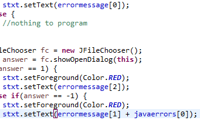
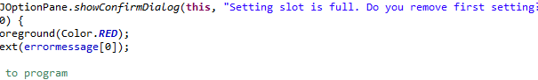

2018年9月6日号
2018年8月30日号の自分へ
おいこら。解説なげんな。なんの解説だよ。全くわからん。思い出せん。
2018/08/31
皆さんこんばんは。零阪麻琴です。
今日は昨日発覚した欠陥を修正したあとに(オブジェクト).addActionListener;や(オブジェクト).setActionCommand;を追加し、(JLabel).setText(文字列);を用いてJLabelの文字を変えれるようにしました。

こちらが今日出来上がったGUIです。
じゃ、おやすみなさい。
2018/09/01
炒飯はあおっても9月1日始業組はあおるな。こんばんは。零阪麻琴です。
さて、今日から22時くらいにこれを書くことにしました。
特にこれと言って変化はないのですが。（投稿日の投稿時間が少し早くなるくらい？）
今日はバックアップ用のセッティングを登録するためのダイアログとか、それに関連することをやってました。
あと、エラーメッセージを予め配列String変数で設定しておき、使うときにはerrormessage[(エラー番号 - 1)]を置いて呼び出す仕様に変更してました。
今後は用意してあるものを呼び出すだけなので、スペルミスとかが結構減ると思われます。
最後に画像を二枚貼っておきます。じゃ、私は焼きそば食ってきます。

2018/09/02
今日は設定の名前を決めるダイアログや、それの代入のための処理を追加しました。
しかし、ツイッターでも言った通り、まさに「なんでそうnullんですか」の一言で言い表せるような現象が起きてしまっているので、そのへんの修正に時間がかかりそうです。
とりあえず、そのへんは今月中に終わらせて、さっさとバックアップ機能だけでも動くようにします。
トレイ格納とか、そのへんもやんなきゃいけないし。じゃ、私はとある書類を書いてきます。